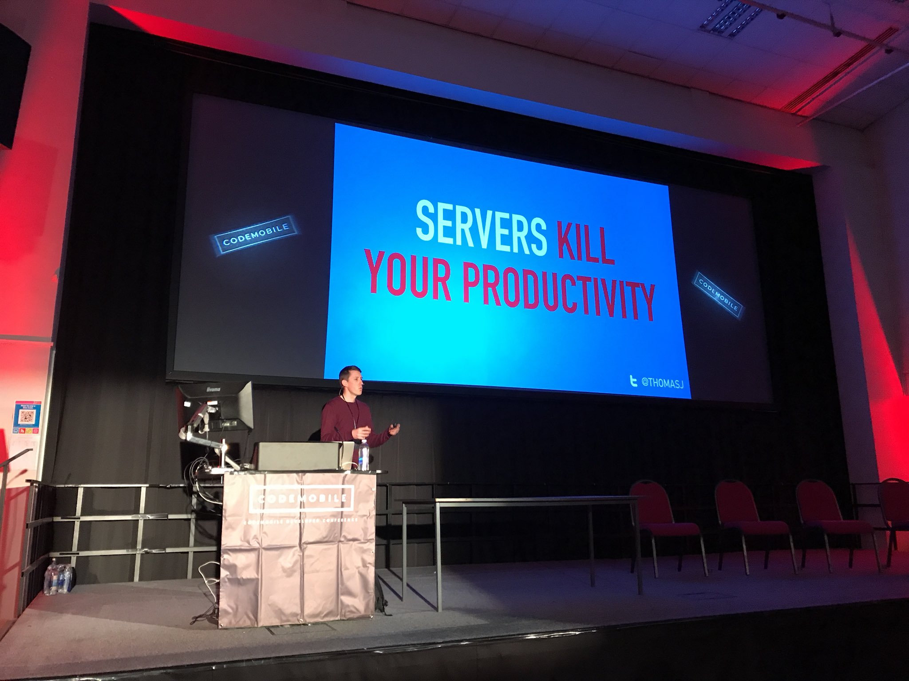

These are the lessons I’ve learnt about Developer Relations, after over five years working as a Developer Advocate. They are based upon my own personal experiences and those of other advocates I’ve spoken to. I’ve seen advocates encounter the same challenges at different companies across the industry. I hope others can learn from my experiences, rather than repeating my mistakes!

background
I worked as a Developer Advocate for IBM Cloud from 2014 to 2020. This was my first role in Developer Relations. Previously, I’d been a software engineer in IBM’s Emerging Technologies division since 2007.
During that time, I witnessed the growth of Developer Relations at IBM. At the beginning, IBM had no official advocacy programme, having just pivoted to public cloud. Today, they have a mature advocacy division, containing hundreds of advocates in both global and regional teams. It was a great learning experience to see the programme mature over those years, with multiple re-organisations, leadership changes and strategy pivots along the way.
When I started as an advocate, I didn’t really know what to do! “Should I apply to conferences? Which ones? Should I write blog posts? What about? Where do I give product feedback?…". I mostly tried random different activities, hoping for good outcomes 🤞. It was “all tactics, no strategy”. Results were (predictably) underwhelming 🤦♂️.
Six years later, I have (a bit) more of an idea on how to be successful in Developer Relations.
My final role at IBM was as Lead Developer Advocate for Serverless. I had spoken at conferences all over the world. Created content and projects which got coverage on popular technology sites. Started a conference for serverless developers (Serverless Days London) that morphed into a global conference series (Serverless Days). Released dozens of successful open-source projects. I was also elected as a committer on Apache OpenWhisk, the open-source serverless platform powering IBM Cloud Functions.
Here are the most important lessons learnt along the way…
Helping Advocates Succeed
Educate Product Managers on Developer Relations
Do product managers in your company really understand what Developer Relations is? Can they explain why you need advocates? Do they know which tasks advocates will do (and those they won’t)? Are they aware of best practices for collaborating effectively with advocates?
Product managers without any training on Developer Relations often misunderstand what it means. They can assume the role is a glorified form of tech sales ("we build it, you sell it") and expect similar outputs. They are mystified as to why advocates aren’t motivated by quarterly revenue targets. They don’t understand why we “spend all this money going to conferences”.
This misunderstanding can result in a dysfunctional relationship between advocates and the product team.
Advocates in those situations often find product managers won’t listen to their feedback, involve them in product decisions or have unrealistic demands ("Can you write all the product documentation? How much revenue is this meet-up going to generate?"). This is a common source of frustration amongst advocates.
How to stop this issue happening (or resolve it once it’s started)?
Organisations should run “Developer Relations Training” for all product managers. This will help them understand what Developer Relations is and why it matters. It will explain what activities advocates are responsible for (and those they aren’t). It can also highlight best practices on collaborating productivity with advocates.
Formalise communication processes
How will the product team, engineers and advocates collaborate?
Formalising communication processes between these groups is essential for an effective Developer Relations team. Relying solely on informal channels for collaboration risks losing feedback, advocates missing product changes and, ultimately, the product team making worse decisions.
advocate feedback
Developer advocates need to constantly provide feedback to the product team and engineers. This may be feature requests from customers, bugs encountered during a workshop, suggestions for UX improvements, conference trip reports with competitor insights, etc.
Choose a single tool to collect advocate feedback (Slack, Jira, Github Issues). Aim for a standardised process across all advocates. Try not to have feedback spread informally across multiple channels. Have a process to acknowledge when feedback has been reviewed.
Most importantly, product managers and engineers must regularly review and, where possible, act upon feedback.
There is nothing more frustrating for an advocate than diligently collecting bugs from the field, opening internal issues with all the information and then having them ignored for months. This is closely followed by product teams who do review feedback in timely manner but dismiss everything as unimportant!
product updates
Advocates need to be constantly updated with planned product changes (before they hit production 🤦♂️). Missing out on news around new product features, platform bugs and planned outages leaves advocates vulnerable to encountering them at the worst times, e.g. during conference demos or customer workshops.
Find a process to keep advocates updated with all product changes. This could be a dedicated Slack channel, monthly meeting or tagged Github issues. Inform advocates about potential changes at the start of the design process. This gives them an opportunity to provide feedback early.
Develop & Use Strategic Plans
How does your Developer Relations organisation decide what to do?
Should you sponsor a single keynote slot at a major vendor conference or dozens of small community events? Is it better to run in-person workshops or create online tutorials? Do you target developers in established or emerging markets? What kind of advocates do you need to hire? 🤔
Developing a strategic plan can help you answer questions like this.
Teams without a strategic plan often fall into the trap of “mistaking tactics for strategy”. They focus on “just doing stuff” and “doing more than last year”. Success is demonstrated using vanity metrics. They often develop “magpie syndrome”, jumping from one shiny idea to the next. There is no connection between activities and business needs. Justifying the costs of the advocacy programme becomes challenging.
strategic plan contents
But what should go in your strategic plan? According to “Good Strategy Bad Strategy: The Difference and Why It Matters” by Richard Rumelt, a good strategy has the following components:
- Diagnosis: Understanding & defining challenges faced
- Guiding Principles: Strategic direction to address diagnosis, where to focus efforts & resources.
- Coherent Actions: Action plan for implementing the guiding principles
Here are some examples of mapping those components to a Developer Relations organisation.
Diagnosis could include the following information:
- What developer audiences are you targeting? Why are you targeting those markets? Provide sample personas for developers in those segments and background information on the developer audiences.
- What are you doing at the moment? What issues do you have reaching those developers? What resources do you have available?
- Who are your competitors? What are they doing? How does it compare to your efforts?
- What does success look like for the team? How does this compare to your current output?
Guiding principles would contain a high-level overview of the developer activities that organisation will focus on. This section will explain why those activities are chosen, referencing the developer audiences defined, resources available and challenges faced by the organisation.
Coherent actions translate the guiding principles into objectives and tactics, i.e. what you are going to do. This might include conferences to sponsor, advocates to hire, content to write, workshops to create, etc. Define Metrics, KPIs, OKRs and other performance indicators here.
Make sure your strategic plan is not just a series of buzz-words. Focus on justifying the “why” you are doing activities. Don’t let the plan be so generic it could be used for any Developer Relations team. Share the plan early and get feedback from advocates and the wider business units. List assumptions, risks and “known unknowns” for the plan. Changes to these factors should cause a re-evaluation of the plan.
using the plan
Evaluate all potential advocacy activities against the strategic plan. Do they help the organisation overcome challenges defined and reach agreed goals? Do they make sense against guiding policies listed? Are they possible with the resources available? Using a plan like this helps make better, more consistent and justifiable decisions.
Strategic plans also protect teams against a descent into constant “fire-fighting” mode. If other business units agreed upon the plan, it can be used to push back against all those perpetual last-minute requests for help. ("Can you just fly across the world tomorrow and do booth duty for an internal client conference?” “Sorry, this type of activity is not something the organisation has agreed to focus upon."). These types of tasks can overwhelm advocates, leaving not enough focus on advocacy goals.
Finally, don’t forget strategic plans are not supposed to be perfect or immutable. Don’t obsess over developing the perfect plan, rather than starting and iterating based upon feedback. Plans will change continually based upon external factors (“No plan survives first contact with the enemy”). Perform regular retrospectives to evaluate what worked, what you got wrong and what to change in future.
Keeping Advocates Happy
Let Developer Advocates Make Decisions
Does your organisation devolve decision making to the advocates where possible?
Advocates are most effective when they are trusted and empowered to decide on activities to support developer communities. Decisions should be possible without erroneous amounts of bureaucratic oversight and process. This includes decisions involving reasonable financial costs.
Consider the following scenarios, “As an advocate you…"
- Get a message from a local meet-up organiser. They have a meet-up this week but no sponsorship for food and drinks. The event is about a key technology area for your products. You know the meet-up, the organiser and likely attendees. You think it would make sense to help them out.
- Receive a last-minute invitation to replace a speaker at an external conference. This was an event applied to speak but didn’t make it past the CFP. You need to approve travel and accommodation expenses immediately. It would also be great to order some swag to hand out at the event.
- Meet a disgruntled customer at a workshop. Having fixed their problems (due to underlying bugs in your platform), you want to compensate them for the difficulties they encountered. Complementary account credit seems like a sensible solution.
What would advocates have to do to make these things happen in your organisation? Are they trusted to make these decisions? Would it still possible given the short time-scales?
Companies sometimes use a single decision-making process for all advocacy activities. This is regardless of the costs, risks or time-scales involved. Committees of senior managers, rather than advocates, make decisions. Everything requires multiple levels of approval. Nothing happens fast.
What can you do instead?
Trust advocates to make decisions on tactical activities. Have different decision-making processes based upon costs and risk involved. Default to devolving decisions to advocates. Reduce oversight for activities with low costs and risks. Allocate discretionary spending per month for advocates to support tactical activities. Advocates were hired because of their skill in engaging developer communities - let them use it!
Make Developer Advocacy A Career
Define a Career Path
Does your company view Developer Relations as a career? Or more a “fun sabbatical” from “real” roles?
Unfortunately, the latter seems more common. Advocates are often lumped into a single job role, with no distinction between experience levels. There is minimal training to improve skills, other than self-directed learning. There is no clear promotion path, other than back into engineering or product management. Developer advocacy is seen as a “fun” but, ultimately, dead-end job in those organisations.
Make sure your company treats Developer Relations just like engineering, sales or people management.
Define a formal career path for advocates. Have multiple advocacy bands, with explicitly defined roles, responsibilities and experience at each level. Provide a clear promotion path (with training, education and support where necessary). Introduce mentoring to help junior advocates learn from their senior colleagues. Stop making make advocates move out of Developer Relations to get promoted.
Want to see what a sample devrel career path looks like? Here is an example from Slack.
Provide Education & Training
Developer Advocacy is composed of a huge number of different tasks. Advocates may have to do everything from public speaking, technical writing, running events to open-source development and more. Many of these tasks are completely new to people starting in the role.
Provide training and education to help new advocates learn these skills. This might include a monthly education allowance to allow them to buy books on making better presentations, online training courses on technical writing or Developer Relations strategy workshops from companies like hoopy. Support advocates using time on professional development.
Relying on advocates to teach themselves can lead to inconsistent skill levels between advocates. Having formal training programmes helps everyone progress with more uniformity. These programmes can also be used as evidence to support advocates’ promotion cases.
Support Advocates Teaching Advocates
How do you share new knowledge with other advocates in your organisation?
Advocacy teams can often feel like a group of individuals. People work remotely, spread across different timezones and locations, often on different technology areas. They are constantly travelling to events. There is a lack of opportunities to share their experiences and knowledge with others.
Advocates are often left to learn the same “devrel life lessons” through (painful) personal experiences, e.g. “Unreliable conference wifi killed your live demo? Always make recorded video back-ups for all future demos”. It would be preferable to learn these lessons from someone’s else failure rather than your own!
Set-up formal knowledge-sharing meetings, between advocates in your organisation, to overcome this problem. This is especially useful to help junior advocates progress. I was lucky enough to take part in a meeting like this at IBM. It was a weekly video-chat meeting for all advocates, called “Presentation Help”.
#presentation-help
Advocates could use the meeting to practice conference talks. Advocates would present early versions of talks to their colleagues. Feedback from the audience was then used to improve the presentations.
If no-one had talks to preview, there was an open discussion on advocacy-related topics, e.g. “How do you handle panel discussions”? Senior advocates would also run training sessions for newer advocates on introductory areas (“How do you write a CFP? How do you create compelling slide decks? How do you handle nerves?") at regular intervals. There was also a corresponding slack channel, where people could ask for informal advice, peer reviews and share interesting links outside of the meeting.
Advocates genuinely loved this meeting (how often have you heard anyone say that?!). I’d recommend running this programme in any Developer Relations team.
Help Advocates Maintain Technical Skills
Advocates need to be allowed time to maintain technical skills and develop new ones. It is easy to fill all an advocate’s time with never-ending tasks like conferences, meetups, workshops (and the related travel). This leaves them no space to write code and explore new technologies. Ensure advocates schedule explicit “learning time” in their calendars.
Authenticity is key to building trust with developers. Advocates need hands-on experience to be seen as relevant. Promoting technologies with minimal practical experience leads to people mistrusting advocates.
Wondering how best to maintain technical skills as an advocate? Here are activities I found most useful…
Build (small) real-world applications to fix my own problems
This was the best way I found to learn new technologies and maintain my existing skills. These small applications allowed me to experiment with new technologies, refresh my knowledge of best practices and understand common developer problems. These projects then became source material for blog posts, tutorials and sample open-source projects.
Contribute to open-source projects
Make it easy for advocates to get authorisation to work in open-source projects. This might be in the company’s own projects, related technologies areas or just personal areas of interest. Being involved in open-source has additional benefits for advocates outside of developing their technical skills, e.g. building influence in external communities.
Prototype customer solutions
Advocates can also work directly with customers to prototype solutions. Advocates are often used with customers as technical experts. This may be during early discussions with potential customers or to resolve technical challenges for existing customers. Solutions are often provided in the form of demo code and sample projects. These are handed off to the customer, along with education, to allow them to continue development.
Building A Developer Relations Culture
Put Developers’ Needs First
Develop a “developer-first” mindset. Start thinking in terms of “How can we help developers succeed?”, rather than “How do we get developers to generate value for us?”. Realise products for developers normally exist in a “buyers market”. Focus on interacting with developers on their terms, not yours. Companies often experience difficulties when they don’t embrace this mindset.
Here’s a hypothetical example of what happens when you use the wrong mindset…
zen koan: If a meet-up has no attendees, is it still a meetup? 🧘♂️🧘♀️
Enterprise tech company starts selling platforms, APIs and services as “self-service” offerings. They now know they have to market those products directly to developers. Someone suggests that “developers seem to love meetups” but that “external meetup organisers won’t allow product pitches”. Hmmm, what to do?
Then it hits them, “We’ll just organise our own meetups!”. This sounds like a great idea. If you run the meet-up, you can control the schedule and only have talks from your employees. There’s no risk anyone will say anything negative about your company, the products or mention competitors. You can also collect contact details from attendees to generate leads for marketing. This seems much better than speaking at external meetups.
Pizza is bought, swag ordered and the event is promoted online using Meetup.com. Sign-ups seem a bit slow, so you ask all your employees to send out a load of pre-canned tweets to promote the event (“Want to learn about cloud development? Come to Enterprise Tech Co’s Cloud Meetup Tonight! Free pizza and drinks! #cloud #dev #opensource”). Hopefully developers just forgot to register but will turn up anyway…
Can you guess what happens next? 🤔
No-one actually turns up. Attendees are either company employees or a few business partners who have been dragged along. There was a few random attendees who heard about free pizza but don’t actually work in technology. This was not the intended audience. The company tries again for a couple of months before finally giving up, having wasted thousands of dollars on venues, food and employee time.
So, what went wrong here?
This is an example of not using a “developers first” mindset. The company focused on what they wanted from a meet-up (“promote the platform & collect email addresses”), rather than developers’ needs (“learn how to solve problems with technology”). Instead, they should support their advocates delivering talks at external meetups, where developers already are. Talks should focus on solving real developer problems (which coincidentally might just use their platform to solve the issue), rather than pushing products from pre-prepared shiny sales decks.
Devrel Leadership Should Have Devrel Experience
Would you hire a VP of Engineering or CTO who has never worked as a developer? I’m assuming no.
This approach does not seem to apply in Developer Relations. People often move into senior leadership positions in Developer Relations without any practical experience of the role. If organisations are hiring internally for leadership positions in Developer Relations, employees working in divisions or roles perceived as similar to Developer Relations (“sales, marketing, business development”) often end up filling those roles. I think this comes from Developer Relations being ill-defined and under-valued in an organisation. It is just “pizzas, meetups and swag”, can’t be that hard, right?
Why is this a problem?
Because if senior leadership teams have minimal practical experience, it is easy for them to misunderstand the role and what success actually looks like. They focus on activities and metrics most easily measured, e.g. leads captured. More important, but less tangible, aspects of the role, e.g. building relationships with developers, are ignored. It is easy to underestimate the challenges of advocacy, until you have done the role.
Hire people for leadership roles in Developer Relations with actual advocacy experience.
Be Realistic
There’s a great conference talk from Bridget Kromhout with the title, “Containers won’t fix your broken culture”. It explains that no technology is a panacea that will fix deeper organisational issues. Moving to containers will not fix the lack of trust between development and infrastructure teams.
There could be a version of this talk about advocacy: “Dev Rel won’t (magically) fix your broken products”. Organisations too often expect Developer Relations to perform miracles for struggling products.
“Not enough funding for the development team? Built a product without market fit? Competitors have stronger products? Going to miss quarterly revenue goals? Just sprinkle on some devrel and watch all these problems disappear!"
Advocates often get used as a “hail-mary play” for failing products. When this doesn’t fix everything, advocates still get blamed. The solution is often even more work from the advocates (“We just need more blog posts on X” or “Conference talks should focus more on the products”), rather than realising those products have more fundamental issues. No amount of advocacy can fix a lack of product developers!
Organisations need to be realistic about what advocates can (and cannot) achieve. Developer relations is not a magic elixir for failing products. Blaming advocates for issues outside their control leads to unhappy advocates leaving those companies.
Conclusion
Over the past five years, I’ve learnt a lot of “lessons” about Developer Relations.
Most of them came from struggling early in my advocacy career with issues such as “Should I write blog posts or speak at conferences?”, “Why doesn’t the product team listen to my feedback?” or “How can I learn new things if I’m on the road non-stop?”. Speaking to other advocates, I discovered they had the same issues. They weren’t specific to me or my company.
Whilst trying to solve those issues, I began to think more about why they occurred and what needed to change to prevent them happening at all. This left me with a series of “lessons” about how to make Developer Relations organisations work.
By sharing these lessons, I hope others can learn from my experiences, rather than repeating my mistakes!